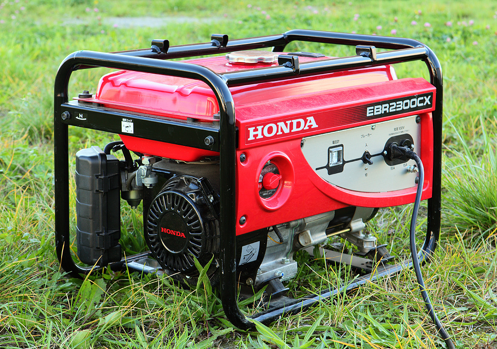

from vlm_monitor.core import *vlm-monitor
A second set of eyes.
This is a general purpose library that allows you to use a VLM (Vision Language Model) to thoroughly describe the contents of a video, with subtitles included for additional context.
In essence, this library provides a second set of eyes.
The output is a database object containing the video description.
If you want to directly run this notebook, you want to have an OPENROUTER_API_KEY set.
Installation
Install latest from the GitHub repository:
$ pip install git+https://github.com/ForBo7/vlm-monitor.gitor from pypi
$ pip install vlm_monitorDocumentation
Documentation can be found hosted on this GitHub repository’s pages. Additionally you can find package manager specific guidelines on pypi.
Preface
This is a library that allows you to thoroughly describe what occurs in a video.
Concisely:
- A VLM describes the video frame by frame. Each time, it is provided with an empty history together with the frame, the subtitle, and instructions about what exactly to do to describe the frame. If one is processing a 5 minute video with a sample rate of 1 frame per second, the output is 300 individual, isolated frame descriptions.
- An LLM then takes all the isolated frame descriptions and pieces them together to form a summary/description of the video. The user could, for instance, piece together a video description whos summary windows consist of 60 frames (in which case, when the LLM produces the summary of the next window, it will keep the previous windows in its chat history). Or, the user could piece toether an overall video description consisting of a single window comprising of 300 frames.
The biggest beneficiary of this approach is LLM context. Traditional VLM description systems keep the image in the chat history. Images are token heavy. Storing the desription of the image, rather than the image itself, saves the necessary information whilst allowing higher definition: you can describe videos at 1 frame per second, or even lower if you desire so.
More concretely, this library works as follows:
- Set up a database to store the data.
- Load the videos and their frames into the database.
- Allow a VLM to describe the frames.
- Allow a LLM to piece together a description.
And at an even lower level, as follows:
- Set up a database consisting of 4 tables.
- A
videotable to store metadata about your videos - A
frametable to store metadata about the frames in each of your videos - A
runtable to store metadata about each description process - A
runframetable to store metadata about each described frame
- A
- Populate the
videoandframetables - Define the VLM settings
- Process the frames through the VLM, storing the frame descriptions in
runframe - Process the resulting descriptions through the LLM, storing the resulting summary in
video
Example Usage
!rm -rf test_db.db
db = init_db('test_db.db'); db<Database <apsw.Connection "/app/data/vlm-monitor/nbs/test_db.db">>?init_dbdef init_db(
path:str | pathlib.Path='db.db', # Path to database
)->Database:
"Initialize a database and return it."File: ~/vlm-monitor/vlm_monitor/core.py; line: 35
Type: function
Intialize the database with the relevant tables.
dpath = Path('../../data/timss/'); dpath.ls()[:5][Path('../../data/timss/M-CZ3'), Path('../../data/timss/M-AU2'), Path('../../data/timss/M-CZ4'), Path('../../data/timss/M-JP2'), Path('../../data/timss/S-AU4')]dpaths = filter_paths(dpath.ls()).sorted(lambda o: (o.stem[:-1], o.stem[-1])); dpaths[:5][Path('../../data/timss/M-AU1'), Path('../../data/timss/M-AU2'), Path('../../data/timss/M-AU3'), Path('../../data/timss/M-AU4'), Path('../../data/timss/M-CZ1')]?filter_pathsdef filter_paths(
paths:list, # List of paths to filter
chs:str='.', # Characters to check for in the component
comp:str='stem', # Path attribute to inspect (e.g. 'stem', 'name')
negate:bool=True, # If True, exclude paths whose `comp` contains `chs`; if False, keep only those
)->list: # Filtered list of paths
"Filter paths by whether a path component contains specified characters."File: ~/vlm-monitor/vlm_monitor/core.py; line: 63
Type: function
populate_db(db, dpaths)?populate_dbdef populate_db(
db:Database, # Database to populate
paths:list, # List of video directories
sample_rate:int=1, # Sampling rate for frames
trans_suffix:str='txt', # Transcript file suffix
)->None:
"Populate video and frame tables from a list of video directories."File: ~/vlm-monitor/vlm_monitor/core.py; line: 122
Type: function
len(db.t.video()), len(db.t.frame())(52, 149880)Populate the database with your data. populate_db assumes your data exists in a flat directory as follows.
Path('../../data/timss').ls()[:5][Path('../../data/timss/M-CZ3'), Path('../../data/timss/M-AU2'), Path('../../data/timss/M-CZ4'), Path('../../data/timss/M-JP2'), Path('../../data/timss/S-AU4')]Each flder is a video containing all frames for that video, as well as that video’s transcript in SRT format, saved as a .txt file.
s = session(system='Reply concisely', model='bytedance-seed/seed-2.0-mini', vendor_name='openrouter', reasoning_effort='high')?sessiondef session(
msgs:list | None=None, model:str='', max_think:float=inf, usage:bool=True, display:bool=True, **kwargs
):
"Create a stream partial with preset model/kwargs."File: ~/vlm-monitor/vlm_monitor/core.py; line: 204
Type: function
A session is an instance of a LLM.
from PIL import ImageImage.open('test.jpg')
r = await s([user('what do your elf eyes see?', img2b64(Path('test.jpg')))]); rElf eyes spot this crisp Honda EBR2300CX portable gas generator, nestled in sun-warmed wild grass dotted with tiny pink clover blooms. I notice the black roll-cage frame, the plugged-in power cord, the Japanese-labeled control panel with its voltage meter and circuit breaker, and the branded recoil starter on the engine side.
- model:
bytedance-seed/seed-2.0-mini - finish_reason:
stop - usage:
Usage(prompt_tokens=1336, completion_tokens=399, total_tokens=1735, cached_tokens=0, cache_creation_tokens=0, reasoning_tokens=326, raw={'prompt_tokens': 1336, 'completion_tokens': 399, 'total_tokens': 1735, 'cost': 0.0002932, 'is_byok': False, 'prompt_tokens_details': {'cached_tokens': 0, 'cache_write_tokens': 0, 'audio_tokens': 0, 'video_tokens': 0}, 'cost_details': {'upstream_inference_cost': 0.0002932, 'upstream_inference_prompt_cost': 0.0001336, 'upstream_inference_completions_cost': 0.0001596}, 'completion_tokens_details': {'reasoning_tokens': 326, 'image_tokens': 0, 'audio_tokens': 0}})
?userdef user(
txt:str, img:str | None=None
)->Msg:
"Build a user message with optional image."File: ~/vlm-monitor/vlm_monitor/core.py; line: 147
Type: function
?img2b64def img2b64(
path:Path
)->str:
"Encode an image file as a base64 data URL."File: ~/vlm-monitor/vlm_monitor/core.py; line: 197
Type: function
I’ll now try process an entire video.
vlm_prompt = 'Tell me what your elf eyes see. In particular, pay attention to anything that looks green.'vid = db.t.video[1].id; vid1db.t.video[1].title'M-AU1'o = await deploy_run(vid, db, s, vlm_prompt, prompt_type='default', stop=300, step=3, cache=True, n_workers=20, pause=0.1, max_retries=2)?deploy_runasync def deploy_run(
video_id:int, db:Database, session:Callable, prompt:str, prompt_type:str, start:int=0, stop:int | None=None,
step:int=1, cache:bool=False, include_subs:bool=True, n_workers:int=8, pause:float=3, max_retries:int=2
)->Run:
"Run a single prompt across a range of frames, storing results in the database."File: ~/vlm-monitor/vlm_monitor/core.py; line: 307
Type: function
Individual frame descriptions have been stored. It is now time to combine everything together to form a coherent narrative.
summary_prompt = 'You will receive a series of individual frame descriptions. You need to combine these individual descriptions together into a coherent narrative.'summary = await summarize_run(db, s, sys_prompt=summary_prompt, run_id=o.id, window_sec=60, step=1, cache=True)?summarize_runasync def summarize_run(
db:Database, session:Callable, sys_prompt:str, run_id:int | None=None, video_id:int | None=None,
window_sec:int=300, step:int=1, cache:bool=False
)->str:
"Summarize a single run or all frames for a video in rolling windows."File: ~/vlm-monitor/vlm_monitor/core.py; line: 424
Type: function
print(summary[:500])[1–178s] ### Cohesive Narrative of the Classroom Footage
What unfolds across the timed footage is a detailed tour of multiple school classroom settings, viewed through the sharp, observant lens of elven vision, with green as the recurring standout accent color.
Opening in the first 25 seconds, the scene is a quiet, empty classroom: bright green padded plastic chair seats and backs pair with dark-topped student desks clustered across the room, with faint green trim lining the left-side windows. And that’s that.
Developer Guide
This library is built using nbdev, a way to create dlightful software with Jupyter Notebooks. Learn how to get started with nbdev here.
Install vlm_monitor in Development mode
# make sure vlm_monitor package is installed in development mode
$ pip install -e .
# make changes under nbs/ directory
# ...
# compile to have changes apply to vlm_monitor
$ nbdev-prepareAfter cloning, be usre to run nbdev-install-hooks in your terminal to install Jupyter and git hooks. These hooks clean, trust, and fix merge conflicts in notebooks.
Anytime you make changes to the repo, run nbdev-prepare.
Credit
This library is built using nbdev on SolveIt, both by [Answer.AI]. Other libraries used include: - fastcore - fastlite - fastllm - aidialog - fastprogress - pycachy - tiktoken